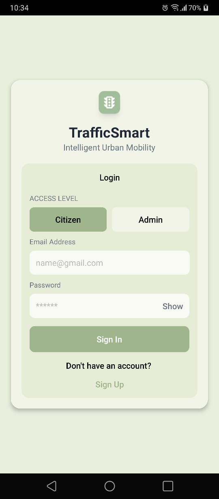
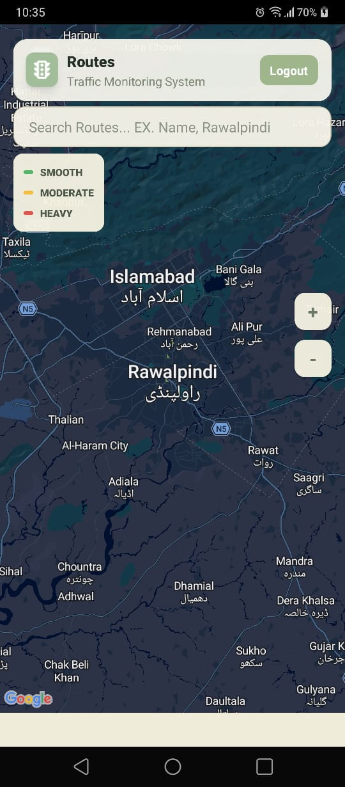
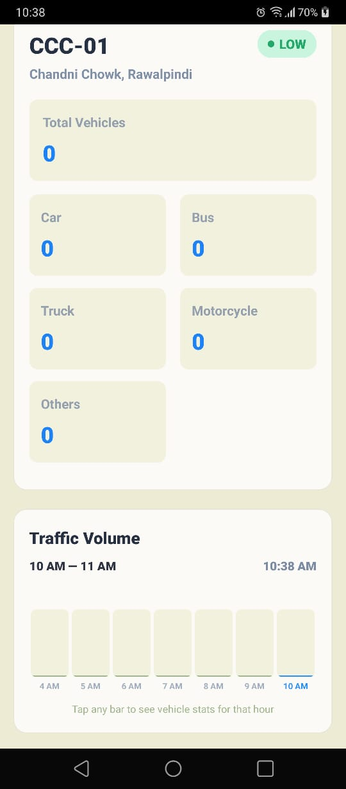
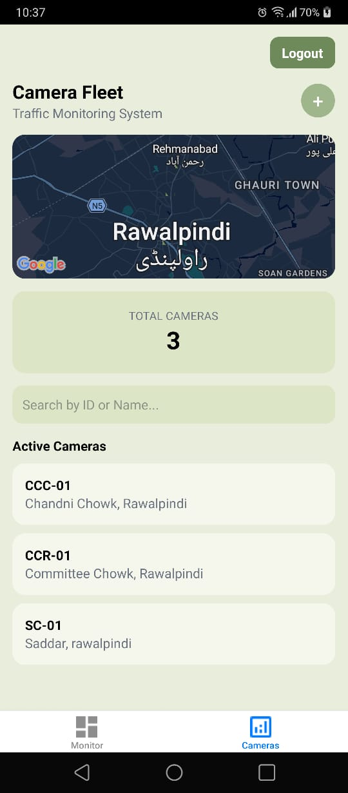
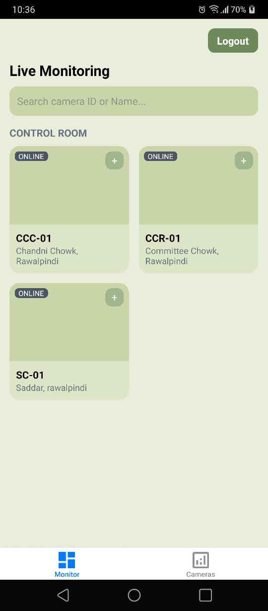
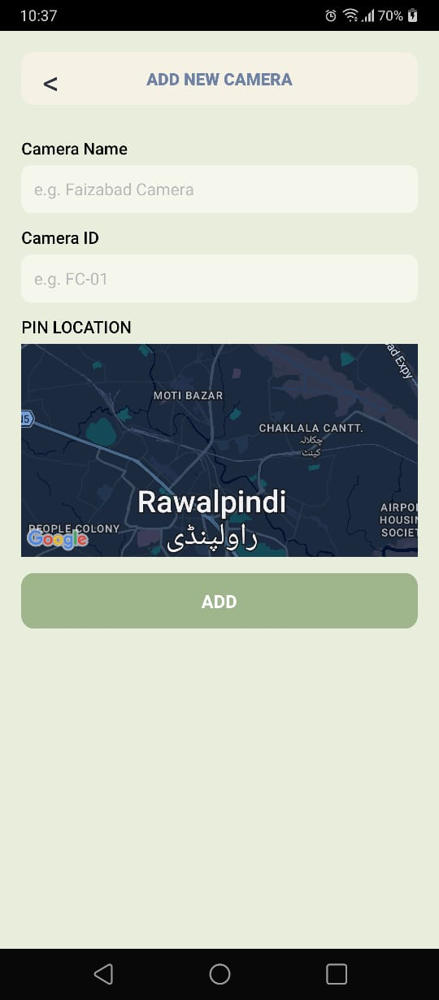

TrafficSmart — Vehicle Congestion Detection
A real-time congestion monitoring system, built end-to-end for city governments and everyday commuters.
The Problem
City roads were overloaded. Commuters couldn't find clear routes to school, work, or home, and the local government had no reliable way to see where congestion was worst and where roads needed expansion. My university flagged this as a real, government-relevant problem worth solving.
What I Did
I built TrafficSmart as a full, branded, working app with two roles: Admin and Citizen. That split keeps day-to-day commuters focused on the one thing they need (where's it congested right now), while giving whoever runs the deployment full control over the camera network. Underneath both roles is the same detection pipeline: I collected and annotated the dataset myself, over 7,000 images shot on my phone from real traffic, labeled in RoboFlow across five vehicle classes (car, bus, truck, motorcycle, other), and trained on YOLOv8, chosen for its speed-accuracy tradeoff based on professors' advice and my own research. Getting usable footage wasn't simple, I had to return to shoot locations multiple times to fix awkward angles and inconsistent quality, since clean, ready-to-use datasets like the ones on Kaggle don't exist in the real world.

Citizen screens
Read-only, built for a commuter checking the road ahead: the color-coded routes map, and search-by-camera to see a specific route's live vehicle counts.


Admin screens
Full control for whoever runs the deployment: add and pin new cameras, monitor every feed live, and pull analytics across the whole network.



What Came of It
The model detects vehicles at 80-90% accuracy across all five classes, though about 10% of detections are still misclassified, something I'm actively investigating (most likely class imbalance between bus and truck). Right now it runs on recorded footage, not live camera feeds yet, so the next real milestone is deploying the model so it can process a live camera feed directly instead of pre-recorded video. The zero counts visible in the Citizen analytics screenshot above reflect that: no footage had been uploaded to that route at capture time, the 5-class breakdown and hourly volume chart underneath are real and working.
Next iteration: deploy the model to run on a live feed (not just recorded video), better-planned data collection upfront, and earlier annotation quality checks.